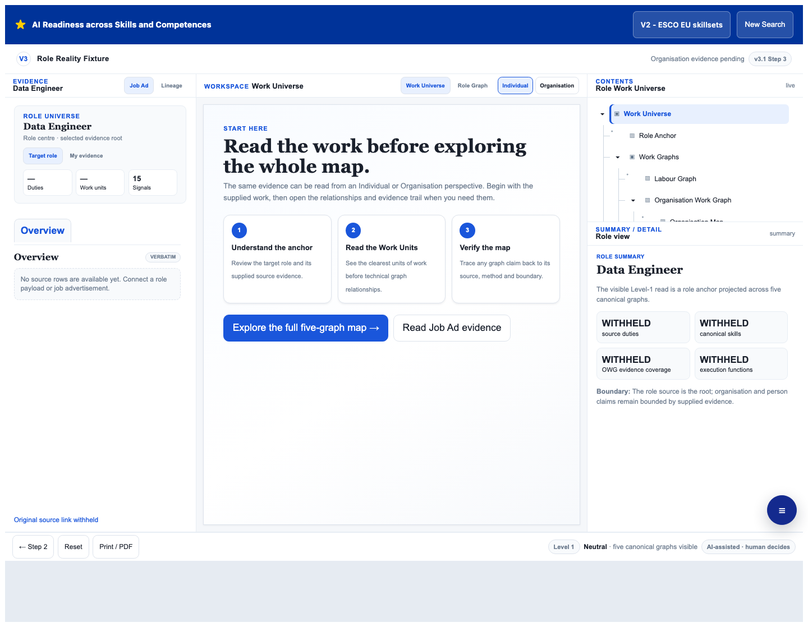
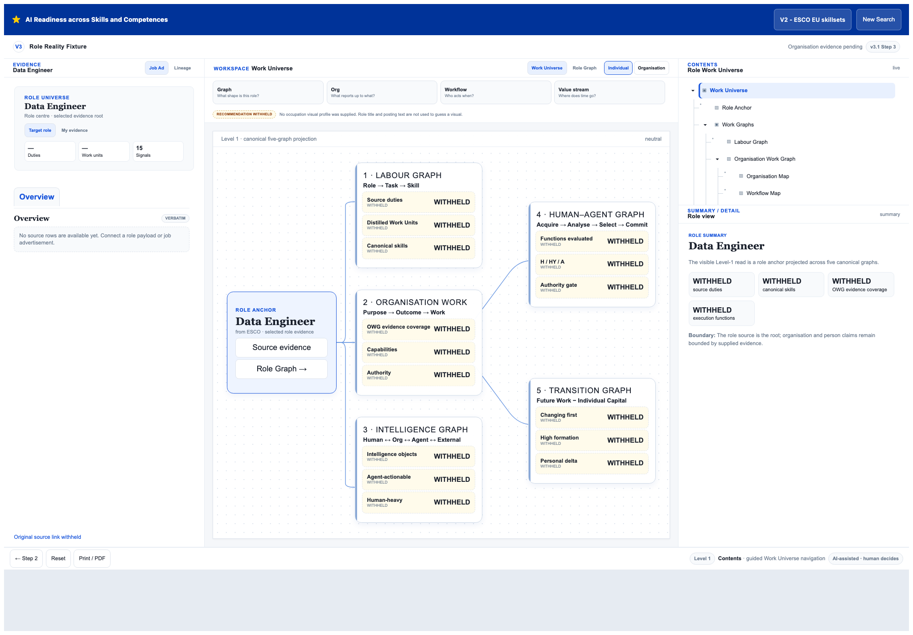
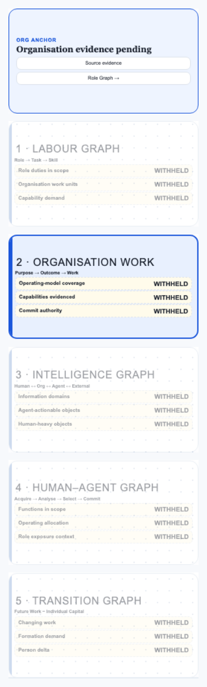
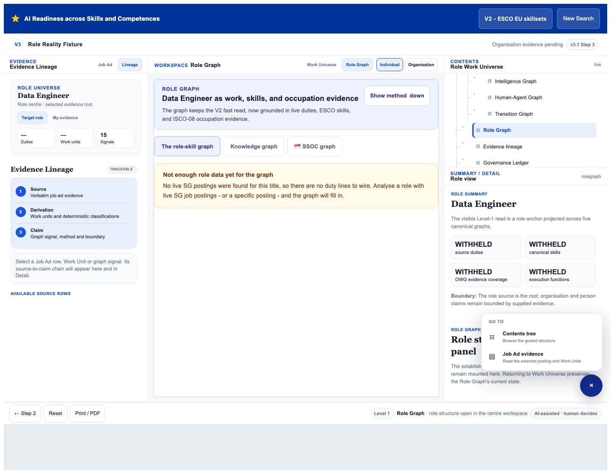
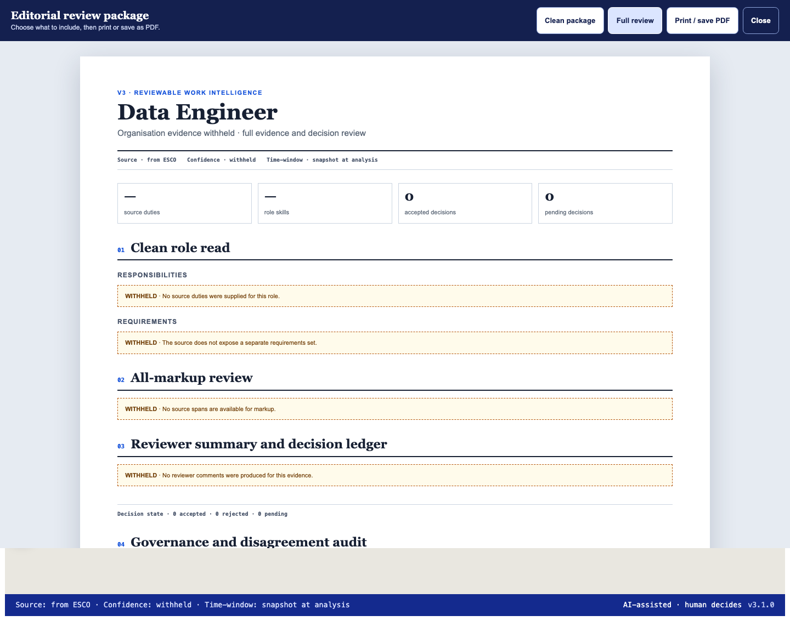
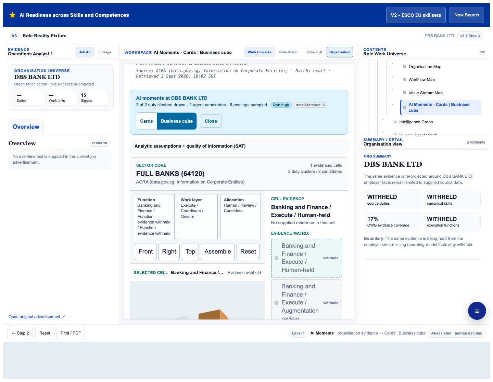
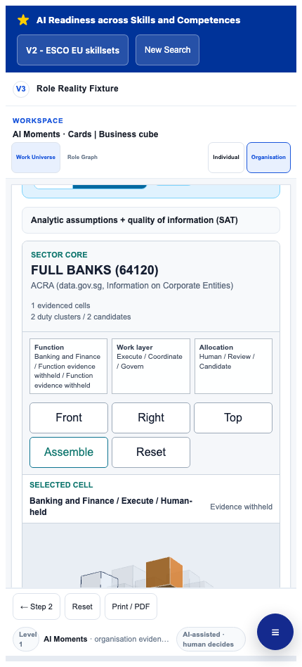

TRANS-STEP3-ENTER-001
Enter
Role title or selected posting reaches Work Universe.
Agent-readable map of the existing Work Universe, evidence workspace and review-output journey. It records current behavior, evidence boundaries, source anchors, tests and provenance without redesigning Step 3.
Role title or selected posting reaches Work Universe.
Work Units and source verification lead the first read.
The user deliberately expands all canonical projections.
Signals and source rows disclose method and boundary.
Structured intent enters the evidence workspace.
Role Graph and FAB paths return to Work Universe.
Source evidence, centre canvas and Contents/detail rail form the persistent workbench.
Labour, Organisation Work, Intelligence, Human-Agent and Transition each expose three signals.
Source, derivation, method and boundaries remain visible. IDs are session-positional; the source-bearing workspace route is conditional.
Role, organisation and person perspectives reuse the same evidence without inventing missing facts.
The Labour graph opens the preserved role-evidence graph inside the centre panel.
Graph intent enters Review Studio and returns. Source-evidence intent is conditional on source rows.
Supplied-data builders are contract-tested; browser evidence covers absent-payload withholding, not positive React rendering.
Supplied-data logic is contract-tested; browser evidence covers absent and incomplete controls.
Clean and Full Review packages preserve evidence gates in non-empty A4 output.
Desktop panels own overflow; phone navigation uses one contextual FAB and logical panel at a time.
A movable 3 x 3 x 3 view crosses function, work layer and allocation. All 27 cells stay addressable, including explicitly withheld cells, and one selected-cell state drives canvas and inspector.

SCR-STEP3-DESKTOP-START-001 Guided first read. Open full resolution.
SCR-STEP3-DESKTOP-MAP-001 Five canonical graphs. Open full resolution.
SCR-STEP3-MOBILE-MAP-001 Expanded scroll-aware capture containing all five phone-width graph cards. Open full resolution.
SCR-STEP3-ROLE-GRAPH-001 Embedded Role Graph state; this is not the advanced workspace. Open full resolution.
SCR-STEP3-PRINT-001 Desktop Full Review capture. Open full resolution.
SCR-STEP3-CUBE-DESKTOP-001 Docked cell inspector and complete evidence matrix. Open full resolution.
SCR-STEP3-CUBE-PHONE-001 Compressed controls, selected-cell feedback and nonblank movable canvas. Open full resolution.| Payload | Available evidence | Absence behavior |
|---|---|---|
PAY-STEP3-POSTING-001 | ReviewStudio receives title, employer, skills, combined text and salary midpoint; the analysis request separately carries UUID, URL, employer identities and source. | Do not claim the complete Step 2 object reaches ReviewStudio. The role-title route remains available and missing source rows report WITHHELD_NO_SOURCE_ROWS. |
PAY-STEP3-PERSON-001 | User-confirmed session evidence and selected skills | Raw text does not become a skill, access, authority or capability claim. |
PAY-STEP3-ORGANISATION-001 | Explicit nodes, relationships, steps, stages and controls | No hierarchy, sequence, timing, waste, savings or maturity is inferred from a posting. |
PAY-STEP3-GOVERNANCE-001 | Supplied decisions, owners, controls and reviewer positions | No actor, timestamp, consensus or autonomous permission is manufactured. |
WITHHELD is a valid mapped state. It records that the interface refused to promote missing evidence into a product claim.| Test | Coverage |
|---|---|
TEST-STEP3-GRAPHS-BROWSER-001 | Entry, five graphs, fifteen signals, measured geometry and responsive panel behavior. |
TEST-STEP3-MAPS-BROWSER-001 | Absent-payload specialised maps and governance withholding. |
TEST-STEP3-PRINT-BROWSER-001 | Clean/Full Review routing and non-empty A4 PDF. |
TEST-STEP3-ROUNDTRIP-BROWSER-001 | Role Graph/FAB return and conditional source-evidence round trip. |
TEST-STEP3-CONTRACT-001 | Schema resolution, locator ranges, raster dimensions, hashes, provenance parity and protected paths. |
TEST-STEP3-CUBE-BROWSER-001 | Twenty-seven cells, withheld selection, pre-init action replay, one live region, drag/keyboard movement, canvas pixels, touch targets and responsive inspector placement. |
TEST-STEP3-AUDIT-001 | Cross-audit source, token, provenance and protected-path integrity. |
| Field | Status | Meaning |
|---|---|---|
| Implementation commit | 7da49403434d5c2791e70a36440ba19fe120efa6 | Verified implementation commit on the audit-fix branch. |
| Merge commit | 2c0146be34ee3ea87e11d7b9c40b52bce42b0095 | PR #484 merged to main at 17:32 SGT on 2 September 2026. |
| Deployment status | SUCCESS | Both Railway services and both Vercel projects reported success for the merge commit. |
| Physical runtime | DEPLOYED_CHROMIUM_VERIFIED_NOT_PHYSICAL_DEVICE | The deployed origin passed deterministic Chromium journeys; no physical phone or Safari claim is made. |
| Gap | Status | Boundary |
|---|---|---|
GAP-STEP3-PHYSICAL-001 | OPEN | No physical-device production pass is claimed. |
GAP-STEP3-FOOTER-001 | PARTIAL | Work Universe does not expose the Review Studio time-window value. |
GAP-STEP3-PERSON-001 | PARTIAL | A unified source-linked candidate proof ledger remains unbuilt. |
GAP-STEP3-SOURCE-ROUNDTRIP-001 | PARTIAL | The source-bearing workspace round trip remains conditional. |
GAP-STEP3-ROLEGRAPH-MODES-001 | WIRED | Role Graph modes exist but their toggles are not exercised here. |
GAP-STEP3-POSITIVE-UI-001 | PARTIAL | Positive specialised-map and governance React rendering is not browser-tested. |
GAP-STEP3-REVIEWER-COMMENTS-001 | PARTIAL | The complete reviewer-persona set remains incomplete. |
GAP-STEP3-WIKIGRAPH-001 | PARTIAL | WikiGraph is not the complete occupation-sensitive visual system. |
GAP-STEP3-CANDIDATE-PREP-001 | PARTIAL | Candidate preparation lacks a unified proof ledger. |
GAP-STEP3-TRACK-CHANGE-001 | PARKED | Full split, merge, relabel, escalate and first-class withhold verbs are not built. |
GAP-STEP3-INFRANODUS-001 | PARKED | No dedicated InfraNodus-style concept analysis is implemented. |
GAP-STEP3-ROLE-MAPS-001 | PARKED | Hiring funnel, portfolio, site and control maps remain unshipped. |
GAP-STEP3-COVER-LETTER-001 | PARKED | The earlier cover-letter code is not linked from current Step 3. |